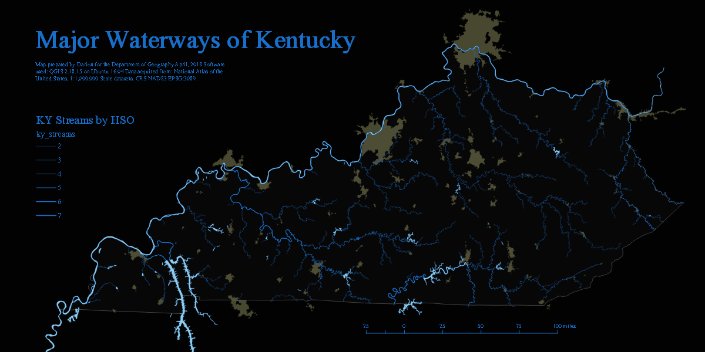

GEO 409: Bluegrass Portfolio

Link to Waterways Page
Link to Springs of Kentucky Page
Link to Red River Gorge Field Mapping Page
Authored by: Darion
See my projects on GitHub:
UKy GEO 409 Mapping Projects
Follow me on twitter, instagram, etc.:
@darioncarden
Contact Information: darioncarden@gmail.com